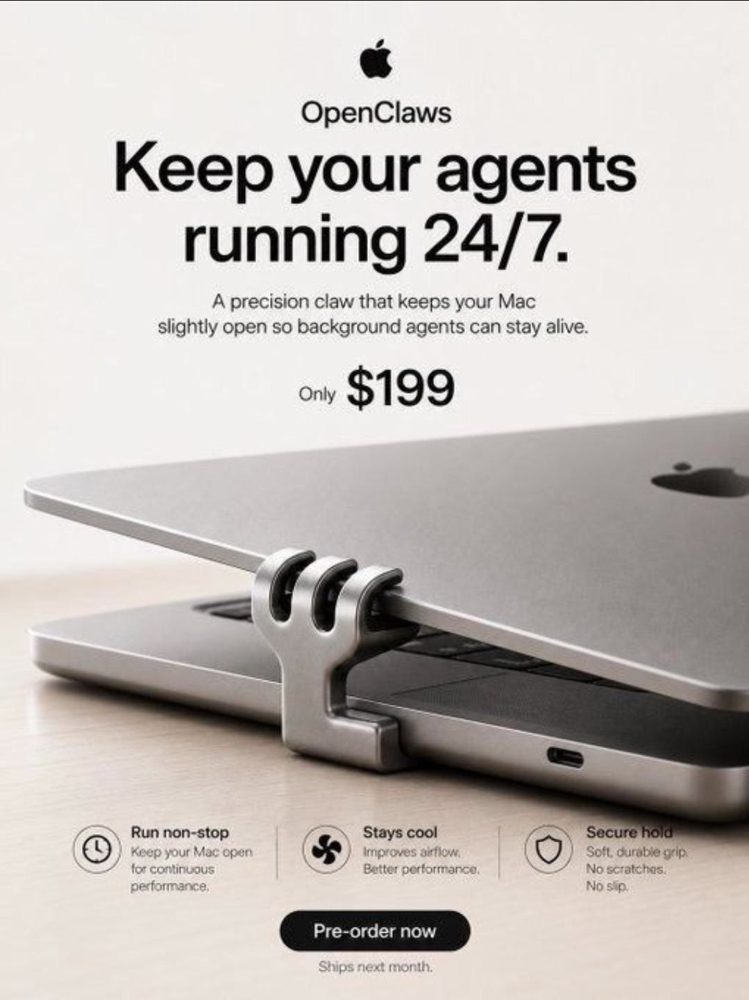
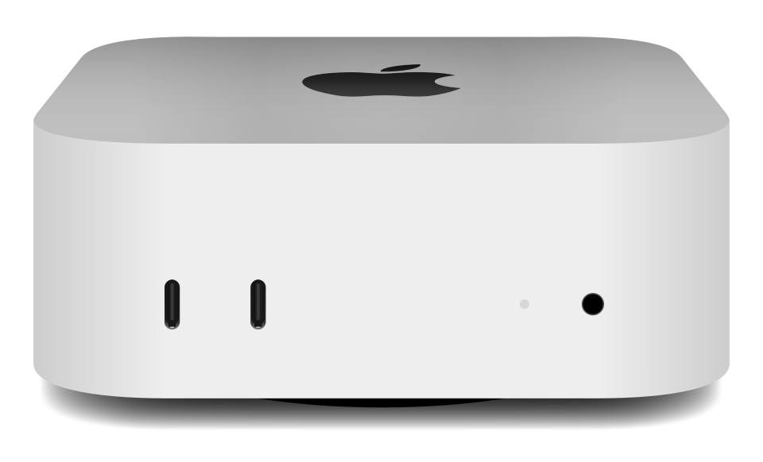
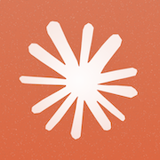
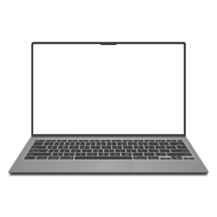
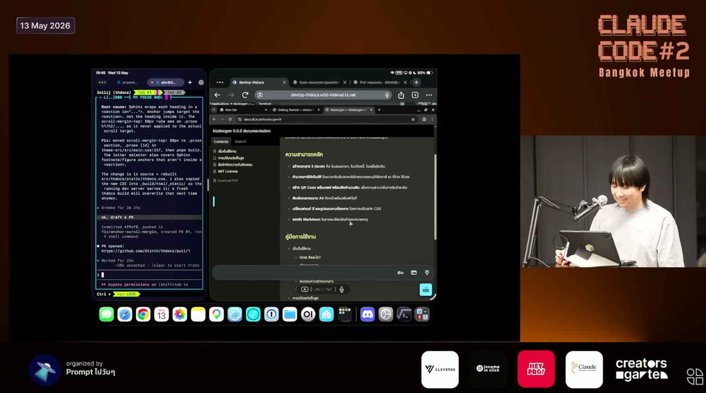
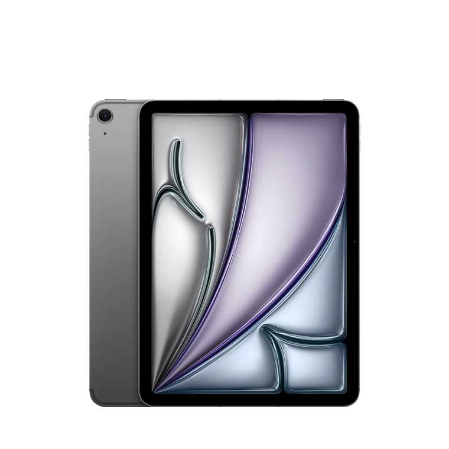
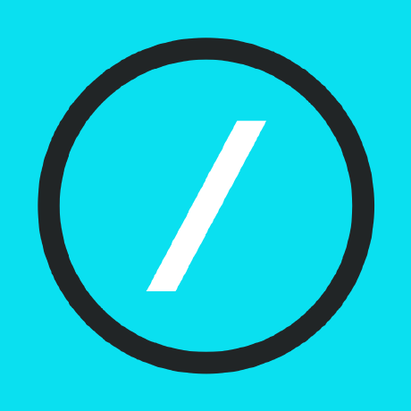
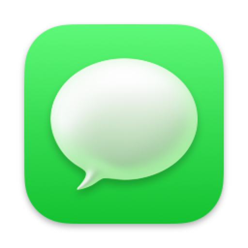
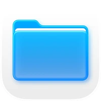

CLAUDE CODE SHARING #3
ศิริวัชร์ คุณาพร (จุ้น)
UI Engineer at MUI
19 Aug 2026 · Agoda Thailand, One Bangkok

Session ยาวขึ้น · หลาย session พร้อมกัน
บางอันปล่อยไว้ แล้วค่อยกลับมาดู
Always Running.
Always Accessible.
Agent ต้องทำงานได้ตลอด และผมต้องเข้าถึงมันได้ตลอด

อยู่บ้าน · เปิดตลอด

Claude Code
พกออกไปข้างนอก
Claude Code
สอง Claude Code แยกกันคนละเครื่อง — sync กันแค่ไฟล์ ไม่ใช่ session
เมื่อได้เห็นพี่ไทใช้ Claude Code บน iPad

ผม

iPad
interface
Mac ที่บ้าน
Claude Code
source code และ session ทั้งหมดอยู่บน Mac — iPad แค่ส่งสิ่งที่ผมทำต่อไปให้มัน

Blink Shell
Terminal บน iPad
blink.sh
Tailscale
เชื่อม iPad กลับไปหา Mac ที่บ้าน
tailscale.com
Connection ที่ไม่หลุดเวลาเปลี่ยนที่
mosh.org
optional
Session ยังรันอยู่ตอนเรา disconnect
tmux.github.io
Tailscale กับ Mosh ทำให้เส้นไม่ขาด — ส่วน tmux คือ session ที่รออยู่บน Mac ปลายทาง
ต่อเข้า Mac ที่บ้าน แล้วเจอ session ที่ค้างไว้รออยู่ กลับไปทำต่อได้เลย ไม่ต้องเริ่มใหม่
Claude Code มี Agent Views อยู่แล้ว เลยไม่ต้องทำอะไรเพิ่ม ก็ใช้งานได้ทันที
ไม่มี iPad ก็หยิบ iPhone ขึ้นมา — session เดิม คุยต่อได้ทันที ไม่ lose context
01
หยิบขึ้นมาเมื่อไหร่ก็ทำต่อจากเดิม มีไอเดียตอนไหนก็เปิด session ใหม่ได้ทันที
02
เครื่องที่ทำงานจริงอยู่บ้าน เปิดตลอด internet นิ่ง — พับ iPad เก็บได้เลย
03
Mac, iPad หรือ iPhone ก็เข้า session เดียวกัน ไม่ lose context
แต่ๆๆ…
ปัญหาไม่ได้อยู่ที่
Claude Code
แต่อยู่ที่ workflow รอบ ๆ มัน
สามอันตรงกลาง คือจุดที่เริ่มมี friction บน iPad
Problem 1
เช่น screenshot / recording
Solution
ให้ Claude เขียน Hook ดักตอนเรียก SendUserFile แล้วส่งไฟล์เข้า iMessage
Problem 2
เช่น วงรูปบอกว่าตรงไหนไม่โอเค
Solution
วงด้วย Pencil แล้ว Save to Files — ไฟล์ไปโผล่บน Mac แล้วบอกว่า “check tray”
Problem 3
เช่น deploy preview ที่ agent ตอบกลับมา
Solution
ให้ Claude เขียน Hook จับ URL ตาม pattern ที่สนใจ แล้วส่งเข้า Messages
ผมใช้ Claude Code
มาแก้ pain point ของการใช้ Claude Code
อธิบาย problem → ให้มันเสนอ option → เลือก → ให้มัน implement

Messagesoutput มาหาเรา
Filesไฟล์ไปโผล่บน Macผมไม่ได้เปลี่ยน workflow ให้เข้ากับ Claude Code — ผมทำให้ Claude Code เข้ามาอยู่ใน workflow ของผม
มี friction เล็ก ๆ อะไร
ที่เราทำซ้ำอยู่ทุกวันบ้าง?
ส่งไฟล์ · ดู preview · เก็บ context · เปิด link
ขอบคุณครับ
วันนี้ cost ของการสร้าง software เล็ก ๆ เพื่อแก้ปัญหาตัวเอง มันต่ำลงมาก
1 / 1